O INNJOY é o sistema de gestão da pousada. Ele reúne em um só lugar tudo o que a
recepção e a administração usam no dia a dia — sem papel, sem planilhas soltas e sem caderno
de reservas.
O sistema tem duas partes:
Parte
Para quem e para quê
Painel de gestão (o sistema interno)
Para a equipe da pousada. É onde você cuida de reservas, hóspedes, estoque, frigobar, financeiro e funcionários. Este manual explica essa parte em detalhes.
Site da pousada (a página pública)
Para os hóspedes. Mostra as acomodações, galeria de fotos, experiências e permite que o interessado envie um pedido de cotação de estadia (seção 17).
Tudo acontece dentro do navegador de internet (Chrome, Edge etc.) — não é preciso instalar
nada no computador da recepção.
O que há de novo nesta versão
Painel “Home” com a situação da pousada em tempo real: hóspedes na casa, check-ins e check-outs do dia e acomodações livres.
Notificações ao vivo: quando alguém cria uma reserva, faz check-in ou check-out, todos os computadores conectados avisam na hora pelo sino.
Busca geral (Ctrl + K): encontre clientes, reservas, acomodações, itens de estoque e funcionários em um único campo.
Registro de hóspedes completo: acompanhantes, documentos com foto/scan e emissão da FNRH (ficha de registro de hóspedes exigida por lei).
Comprovantes de pagamento para baixar e imprimir no check-out.
Impressoras por setor: pedidos de consumo saem automaticamente na impressora certa (cozinha, bar, recepção).
Módulo Financeiro com recebido x previsto, gráficos e itens mais vendidos.
Funcionários com níveis de acesso (Recepção, Gerente, Administrador) e histórico de alterações (auditoria).
2Entrando e saindo (login)
Abra o navegador e acesse o endereço do sistema (fornecido pela equipe técnica). Você verá a
tela de entrada:
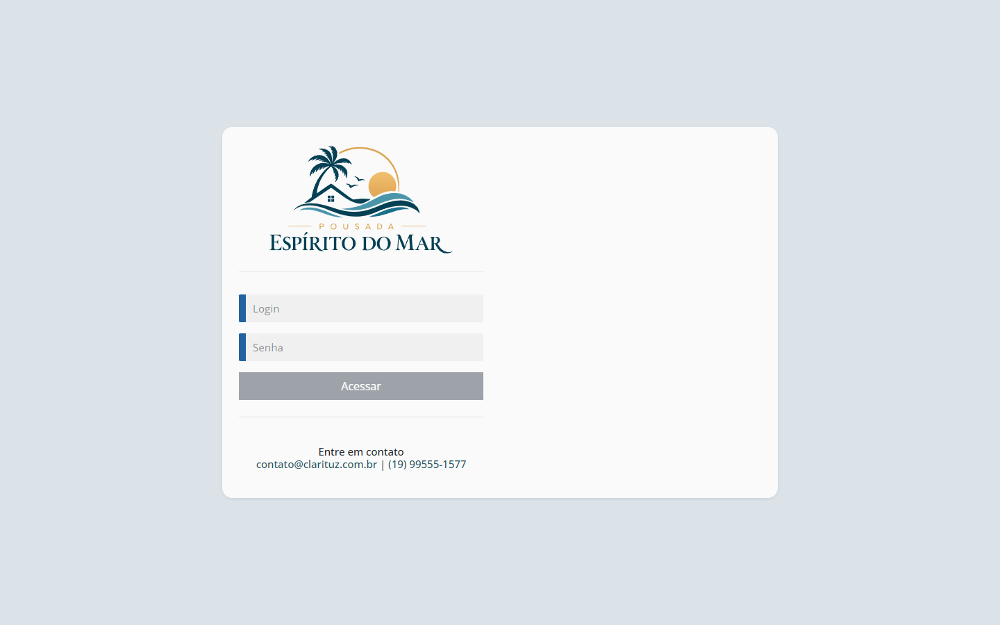
Figura 1 — Tela de acesso ao sistema.
Digite seu Login no primeiro campo.
Digite sua Senha no segundo campo.
Clique em Acessar. Pronto — você entra na tela Home.
Para sair, clique no botão Sair no canto superior direito da tela.
Sempre saia ao final do seu turno, principalmente em computador compartilhado.
Níveis de acesso
Cada funcionário entra com login próprio, criado na tela Administrador (seção 15).
O nível define o que a pessoa pode ver e fazer:
Recepção — usa o dia a dia: clientes, reservas, estoque, frigobar, estacionamento e acomodações.
Gerente — recepção + liberações gerenciais (ex.: cancelamento de reserva em estadia).
Administrador — acesso total: financeiro, pagamentos, dados da pousada, funcionários e histórico.
Atenção
Login e senha são pessoais e intransferíveis. Cada ação no sistema fica
registrada com o nome de quem fez (veja Auditoria, seção 15) — não compartilhe sua senha.
3A tela principal: menu, busca e notificações
Depois do login, toda a navegação acontece pela barra lateral escura à
esquerda e pela barra superior branca.
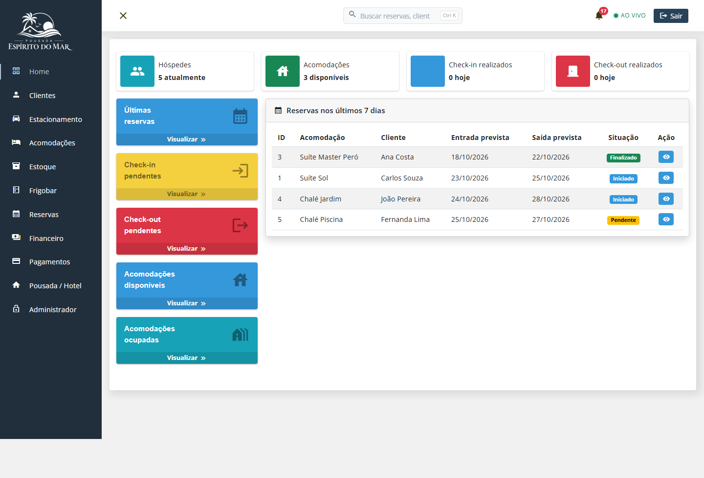
Figura 2 — Visão geral da tela principal (Home).
Menu lateral (esquerda)
Item do menu
O que você faz ali
Home
Resumo do dia: hóspedes, check-ins/outs, acomodações livres e ocupadas.
Clientes
Cadastro de hóspedes, foto, documentos e relatório.
Estacionamento
Vagas e vínculo com acomodações.
Acomodações
Quartos/chalés, tipos, preços e quartos físicos.
Estoque
Produtos, entradas, saídas e movimentações.
Frigobar
Frigobares das acomodações e reposição de itens.
Reservas
Nova reserva, check-in, consumo, check-out, FNRH.
Financeiro *
Recebido x previsto, gráficos e vendas.
Pagamentos *
Comprovantes e formas de pagamento.
Pousada / Hotel *
Dados da hospedagem, logo e impressoras.
Administrador *
Funcionários, permissões e histórico.
* Itens marcados só aparecem para quem tem nível Gerente ou Administrador.
Barra superior
Busca geral — digite um nome, CPF, número de reserva ou acomodação.
Atalho: Ctrl + K. Os resultados aparecem
agrupados (Clientes, Reservas, Acomodações, Funcionários, Estoque); use as setas
↑↓ e Enter para abrir.
Sino de notificações — avisa quando algo importante acontece
(nova reserva, check-in/out, cancelamento). O número vermelho mostra quantas não foram lidas.
AO VIVO — bolinha verde = o sistema está conectado e atualiza sozinho.
Se algo mudar em outro computador, a sua tela já mostra a novidade sem precisar atualizar.
Sair — encerra sua sessão.
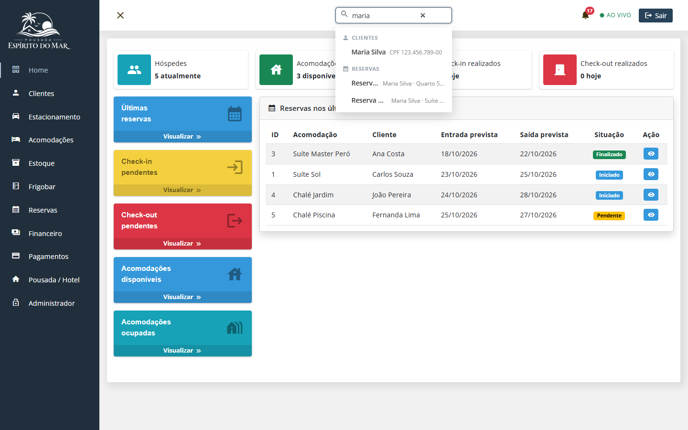
Figura 3 — Busca geral: um campo encontra tudo.
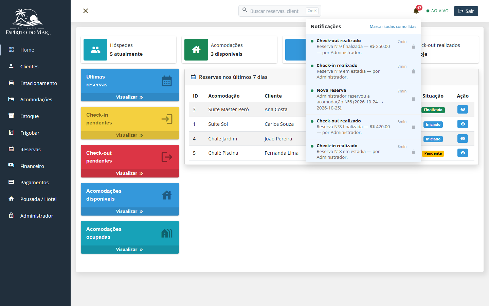
Figura 4 — Sino de notificações aberto. Clique em uma notificação para ir direto à reserva.
4Um dia de trabalho com o sistema
Antes dos detalhes de cada tela, veja como o sistema acompanha a rotina da
recepção. Se você entender este roteiro, entendeu o sistema.
Momento
O que acontece na pousada
O que você faz no sistema
Início do turno
Ver quem chega e quem sai hoje.
Abra a Home: os cartões “Check-in pendentes” e “Check-out pendentes” mostram a agenda do dia.
Hóspede chegou
Recepção confere documentos e recebe o hóspede.
Abra a reserva, clique em Realizar Check-in, registre acompanhantes e emita a FNRH.
Durante a estadia
Hóspede consome frigobar, lavanderia, serviços.
Na reserva, lance em Itens consumidos (baixa automática do frigobar) ou Consumo adicional.
Ligação/WhatsApp pedindo reserva
Novo hóspede quer cotar datas.
Reservas → Nova Reserva: informe o período, clique em Verificar disponibilidade e cadastre.
Hóspede saindo
Conferir consumo e receber o pagamento.
Na reserva, Realizar Check-out: confira o resumo, aplique desconto se houver, escolha a forma de pagamento e Confirme o pagamento. Entregue/imprima o comprovante.
Final do dia/mês
Fechamento de caixa e conferência.
Pagamentos lista os comprovantes emitidos; Financeiro mostra o recebido do dia/mês e o previsto.
Dica
O sistema atualiza sozinho. Se dois recepcionistas estiverem trabalhando ao
mesmo tempo, o que um faz aparece na tela do outro automaticamente — inclusive o aviso no sino.
5Home — o painel de visão geral
A Home é a primeira tela após o login — é o “quadro de avisos” da pousada.
Figura 5 — Home: cartões de resumo e agenda do dia.
Cartões do topo
Hóspedes — quantos hóspedes estão na pousada neste momento.
Acomodações — quantas estão livres agora.
Check-in realizados e Check-out realizados — quantos já foram feitos hoje.
Cartões de atalho (coluna esquerda)
Últimas reservas — reservas criadas recentemente.
Check-in pendentes — quem deve chegar e ainda não fez check-in.
Check-out pendentes — quem está na casa e tem saída prevista.
Acomodações disponíveis / ocupadas — situação atual do mapa de quartos.
Clique em Visualizar >> dentro de cada cartão para ir direto à
lista correspondente.
Reservas nos últimos 7 dias
Tabela com as reservas recentes: acomodação, cliente, período e situação
(PendenteIniciadoFinalizadoCancelado).
O ícone de olho em Ação abre a reserva completa.
6Clientes
Aqui fica o cadastro de todos os hóspedes. É o primeiro lugar para procurar quando alguém
liga querendo reservar — a reserva sempre se liga a um cliente cadastrado.
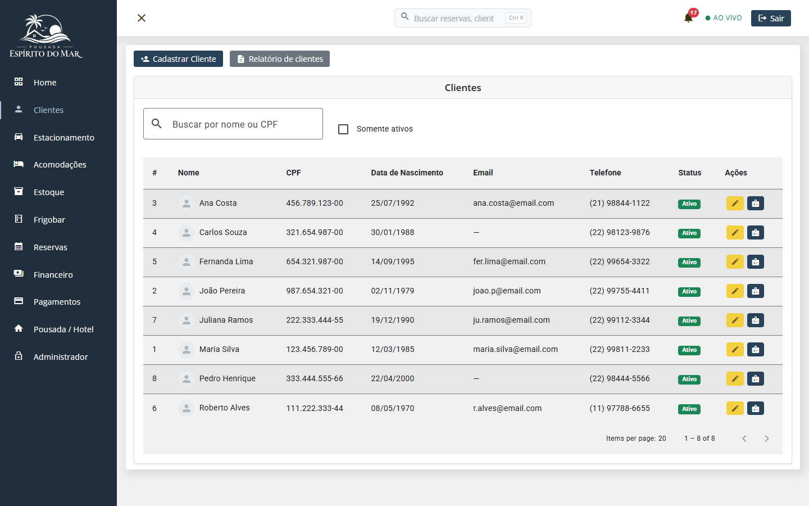
Figura 6 — Lista de clientes com busca, status e ações.
Pesquisar um cliente
Digite o nome ou CPF no campo “Buscar por nome ou CPF” — a lista filtra sozinha.
Marque “Somente ativos” para esconder cadastros desativados.
Cadastrar cliente
Clique em Cadastrar Cliente.
Preencha os dados básicos: Nome completo, CPF, Data de nascimento, E-mail, Telefone, Estado e Cidade. Os campos marcados com * são obrigatórios.
Abaixo, o bloco “Dados complementares (FNRH)” (nacionalidade, naturalidade, profissão e endereço completo) agiliza a ficha de registro — preencha quando o hóspede informar. Se não souber na hora, pode deixar para depois.
Clique em Salvar (ícone de disquete).
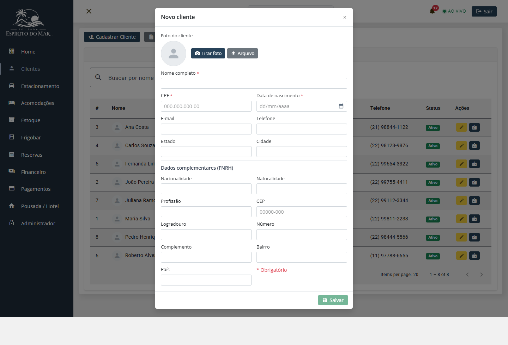
Figura 7 — Ficha de cadastro do cliente.
Foto do cliente
Dentro do cadastro, a área “Foto do cliente” permite:
Tirar foto na hora (ícone de câmera) — abre a webcam do computador dentro de uma moldura; posicione o rosto/documento e confirme.
Enviar um arquivo (ícone de upload) — escolha uma imagem já salva no computador.
Remover a foto atual (ícone de lixeira).
Editar, ativar e desativar
Editar — clique no lápis amarelo na linha do cliente, altere e salve.
Ativo/Inativo — clique no selo verde/vermelho da coluna Status
para desativar (vermelho) ou reativar (verde). Desativar não apaga: o histórico
e as reservas do cliente continuam guardados.
Documentos e fichas FNRH
Clique no ícone azul de carteira de identidade na linha do cliente para abrir
o arquivo digital do hóspede:
Documentos — cadastre RG, CNH, passaporte etc. (tipo, número, emissor e validade) e anexe o scan/foto do documento pela câmera ou por arquivo.
Fichas de registro emitidas (FNRH) — todas as fichas já emitidas para esse cliente, com data e motivo da viagem. O ícone de impressora reimprime qualquer ficha.
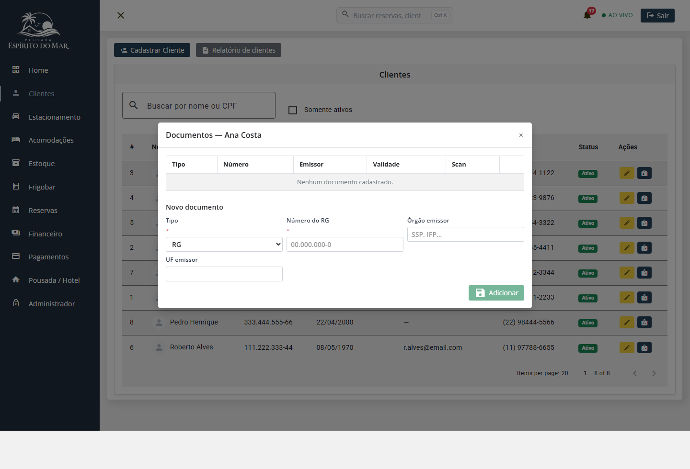
Figura 8 — Arquivo digital do hóspede: documentos e fichas FNRH.
Relatório de clientes
Clique em Relatório de clientes para baixar um arquivo
CSV (abre no Excel) com a lista que estiver na tela — respeitando a busca e o
filtro “somente ativos”. Útil para malas diretas e conferência.
7Acomodações
Acomodações são os quartos, chalés e suítes da pousada. Cada uma tem tipo
(categoria), valor da diária, capacidade e uma
cor no calendário.
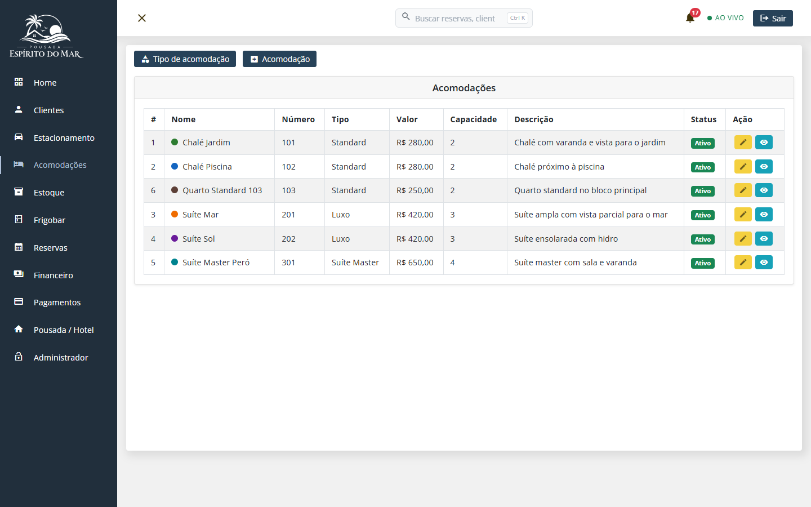
Figura 9 — Lista de acomodações.
Cadastrar o tipo (categoria) — faça primeiro
Clique em Tipo de acomodação.
Na janela que abre, digite o nome do tipo (ex.: “Standard”, “Luxo”, “Suíte Master”) e clique em Cadastrar.
Na mesma janela você pode editar (lápis) ou ativar/desativar tipos existentes.
Cadastrar acomodação
Clique em Acomodação.
Preencha: Nome, Número, Tipo, Valor (diária), Capacidade, Cor (calendário) e Descrição.
Em “Vaga no estacionamento” você pode vincular uma ou mais vagas livres à acomodação (o hóspede ganha vaga garantida).
Clique em Salvar.
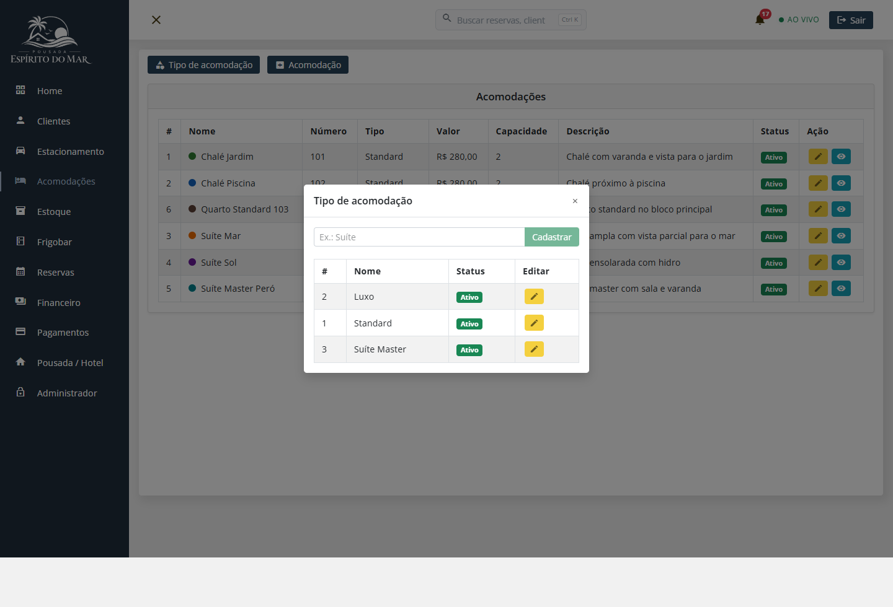
Figura 10 — Cadastro de acomodação.
Quartos físicos e histórico de tarifas
Clique no ícone de olho na linha da acomodação para abrir os detalhes:
Quartos físicos — quando a “acomodação” é, na prática, um conjunto de
unidades iguais (ex.: “Quarto Standard” com portas 103-A, 103-B…), cadastre os números
reais aqui. No check-in o sistema sugere a unidade física.
Histórico de tarifas — toda mudança de valor da diária fica registrada
com “Vigente desde” e “Até”. Assim você sabe quanto a diária custava em qualquer época.
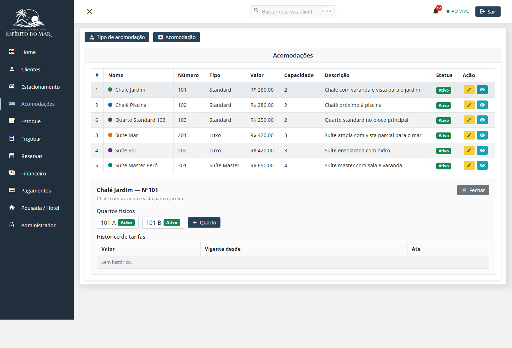
Figura 11 — Detalhes: quartos físicos e histórico de tarifas.
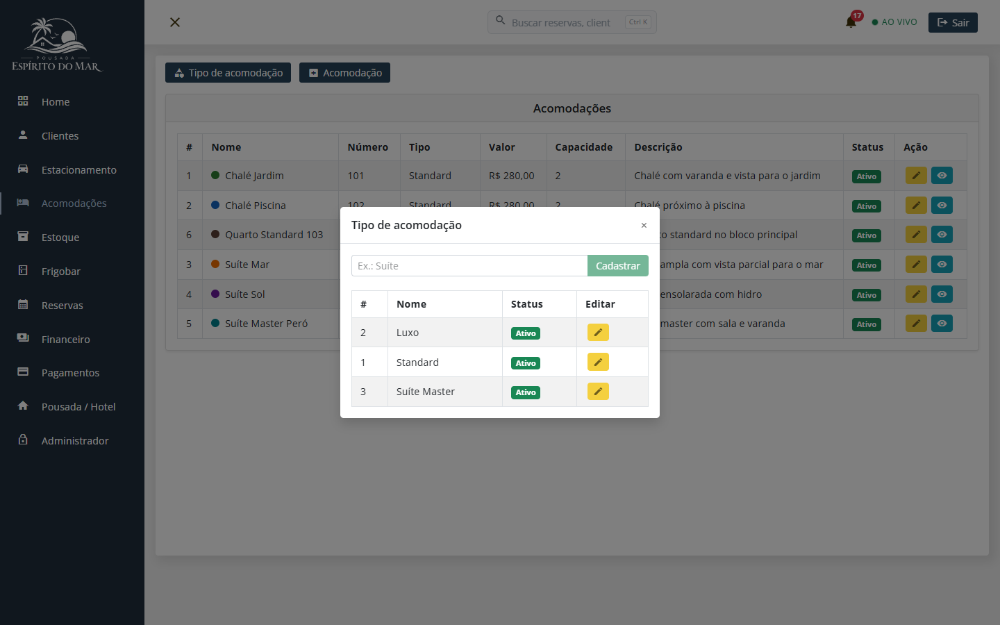
Figura 12 — Janela de tipos de acomodação.
Dica
A cor do calendário escolhida no cadastro é a cor do cartão da reserva na tela
de Reservas — dá para diferenciar chalé de suíte de longe.
8Estacionamento
Controle simples das vagas de carro da pousada.
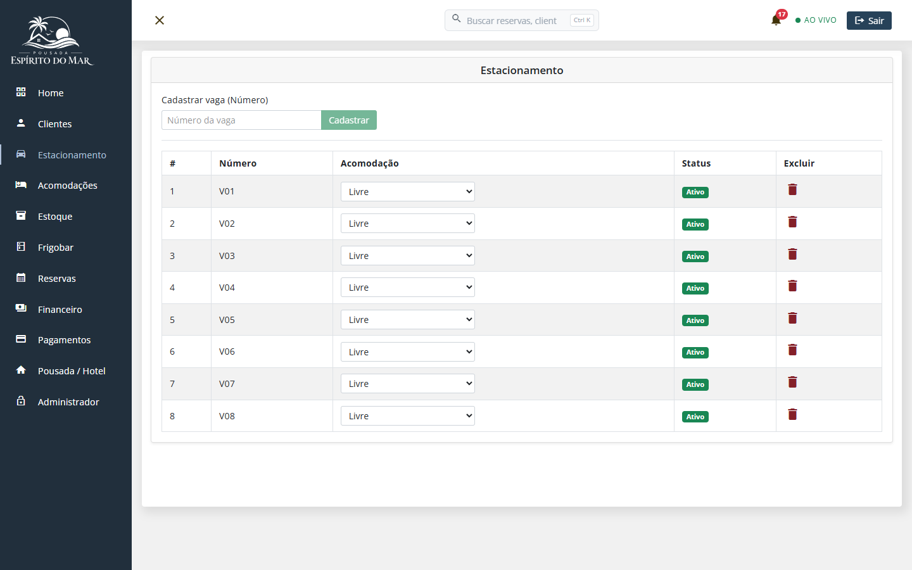
Figura 13 — Vagas de estacionamento e seus vínculos.
Cadastrar vaga — digite o número/identificação no campo do topo e confirme.
Vincular a uma acomodação — na lista, escolha a acomodação no campo da coluna “Acomodação”. Vaga vinculada sai da lista de vagas livres do cadastro de acomodação.
Status — “Livre” aparece quando a vaga não está vinculada; o selo Ativo/Inativo liga e desliga a vaga.
Excluir — o ícone de lixeira remove a vaga (se não estiver em uso).
9Estoque
O estoque controla tudo o que a pousada compra e vende: bebidas, alimentos, itens de
higiene, limpeza. É dele que saem os itens do frigobar.
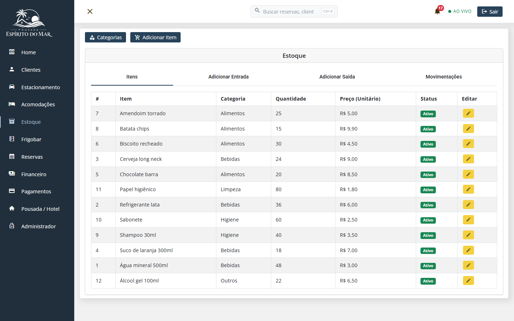
Figura 14 — Estoque: lista de itens com quantidades e preços.
Categorias (faça primeiro)
Antes de cadastrar itens, crie as categorias em Categorias
(ex.: Bebidas, Alimentos). Na janela de categorias também se escolhe a
impressora do setor de cada categoria — é ela que diz onde o pedido de
consumo será impresso (ver seção 14).
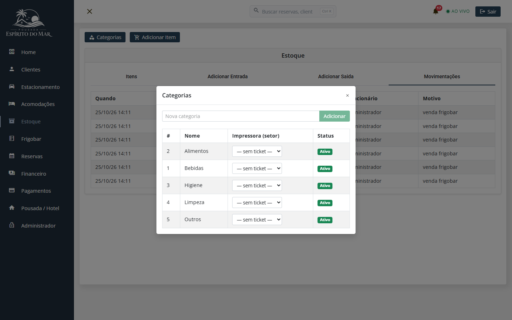
Figura 15 — Categorias de estoque e suas impressoras de setor.
Adicionar item novo
Clique em Adicionar Item.
Informe Nome, Categoria, Valor unitário e Quantidade inicial.
Salve. O item entra na lista com a quantidade inicial.
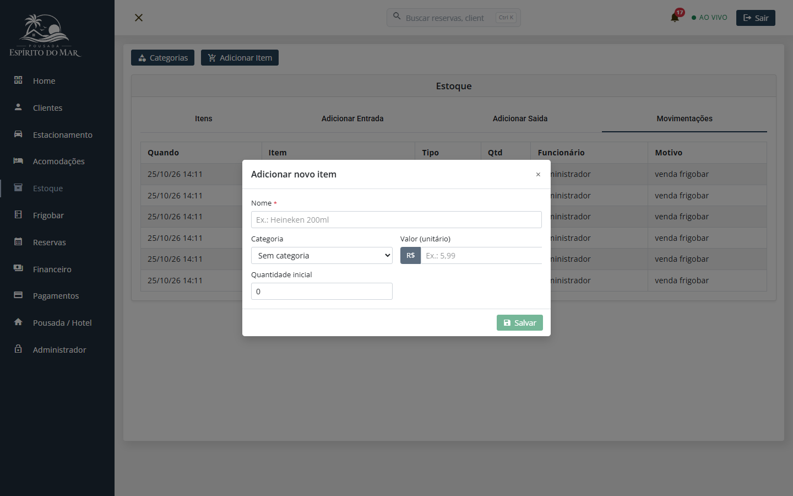
Figura 16 — Cadastro de novo item de estoque.
Dar entrada (compra chegou)
Abra a aba “Adicionar Entrada”.
Na linha do item, digite a quantidade que está entrando na coluna Adicionar. A coluna “Quantidade futura” já mostra como o saldo vai ficar.
Clique em Adicionar no rodapé para confirmar tudo de uma vez.
Dar saída (avaria, uso interno, perda)
Abra a aba “Adicionar Saída”.
Informe a quantidade a retirar e, se quiser, o Motivo (ex.: “vencido”, “uso da cozinha”).
Clique em Retirar.
Movimentações (rastreio)
A aba “Movimentações” é o extrato do estoque: cada entrada e saída com
data/hora, item, tipo, quantidade, qual funcionário fez e o motivo.
Se uma conta não bater, é aqui que você descobre por quê.
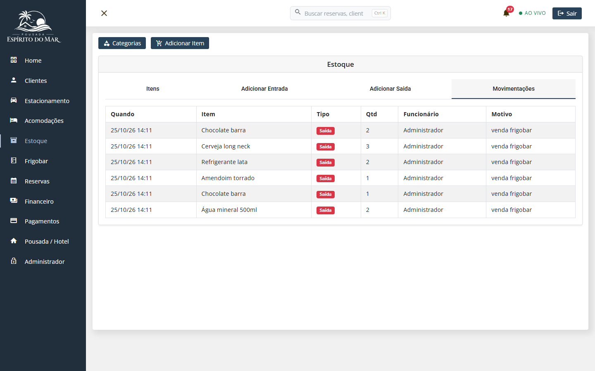
Figura 17 — Extrato de movimentações do estoque.
Importante
O consumo lançado na reserva não sai do estoque — sai do frigobar
da acomodação. O frigobar é abastecido a partir do estoque (seção 10), então a sequência é:
Estoque → Frigobar → Consumo do hóspede.
10Frigobar
Cada acomodação pode ter um frigobar cadastrado, com seus itens e quantidades. É o frigobar
que alimenta o “Item consumido” lançado na reserva.
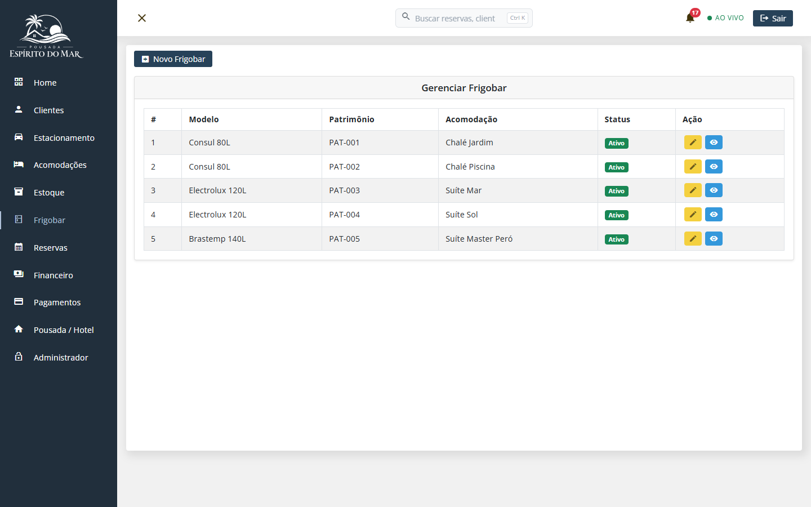
Figura 18 — Lista de frigobares.
Cadastrar frigobar
Clique em Novo Frigobar.
Informe Modelo, Patrimônio (número do bem, se houver) e a Acomodação a que ele pertence.
Salve.
Abastecer o frigobar
Clique no ícone de olho na linha do frigobar para abrir os detalhes.
Em “Adicionar Item”, escolha a Categoria, depois o Item e a Quantidade — o sistema tira essa quantidade do estoque automaticamente.
Confirme. O item passa a constar na tabela do frigobar com o valor unitário.
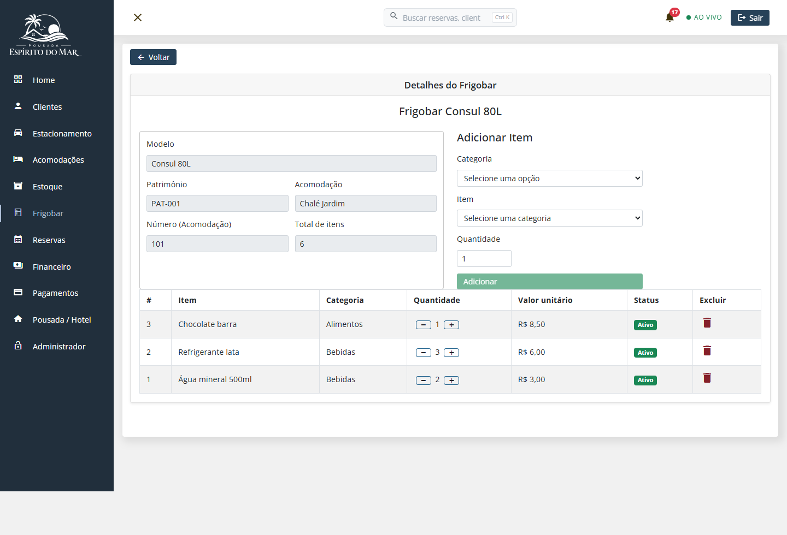
Figura 19 — Detalhes do frigobar: reposição e saldo dos itens.
Os botões + e − na linha do item ajustam a quantidade (o sistema repõe do estoque ou devolve).
A lixeira retira o item do frigobar e o devolve ao estoque.
O selo de Status ativa/desativa itens e o frigobar inteiro.
11Reservas — o coração do sistema
Aqui acontece o fluxo completo: reservar → check-in → consumo → check-out.
A tela mostra as reservas como cartões coloridos — a cor é a cor escolhida no cadastro da
acomodação.
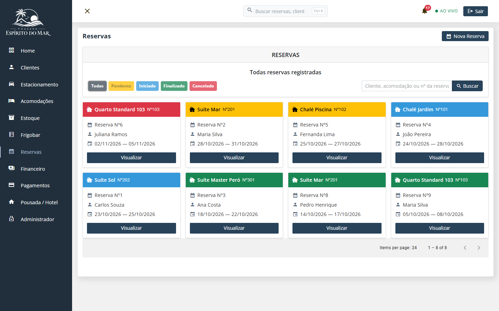
Figura 20 — Reservas em cartões. Os botões no topo filtram por situação.
Filtrar e buscar
Use os botões TodasPendenteIniciadoFinalizadoCancelado para ver só um tipo.
A busca aceita nome do cliente, nome da acomodação ou número da reserva.
O que significa cada situação Pendente reserva feita, hóspede ainda não chegou ·
Iniciado check-in feito, hóspede está na casa ·
Finalizado check-out feito, estadia encerrada e paga ·
Cancelado reserva cancelada
Cadastrar nova reserva
Clique em Nova Reserva.
Em Cliente, digite o nome ou CPF e escolha o cliente na lista que aparece. Se o hóspede ainda não tem cadastro, cadastre-o antes em “Clientes”.
Informe Entrada e Saída pretendidas.
Clique em Verificar disponibilidade — o sistema mostra só as acomodações livres naquele período. Não existe risco de reserva dupla: se duas pessoas tentarem ao mesmo tempo, o sistema bloqueia a segunda.
Escolha a Acomodação, informe a quantidade de Hóspedes e, se quiser, ajuste o Valor da diária (se deixar vazio, usa o preço cadastrado).
Escreva Observações se houver (ex.: “aniversário”, “quarto silencioso”) e salve.
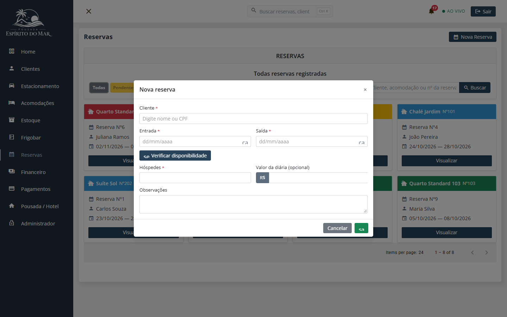
Figura 21 — Janela de nova reserva com verificação de disponibilidade.
A reserva nasce Pendente. Clique em
Visualizar no cartão para abrir a ficha completa dela.
A ficha da reserva
Na ficha estão todos os dados: cliente, CPF, acomodação, número, valor da diária, período,
quantidade de hóspedes e observação. No topo, os selos mostram a situação
(check-in/check-out realizados ou pendentes) e os botões de ação mudam conforme a fase:
Fase
Botões disponíveis
Pendente
Realizar Check-in · Cancelar reserva
Iniciado
Realizar Check-out · Cancelar reserva · Dados do Check-in
Finalizado
Dados do Check-in · Dados do Check-out (com comprovante)
Fazer o check-in (hóspede chegou)
Abra a reserva e clique em Realizar Check-in. O botão só libera na data de entrada (ou depois dela) — antes disso aparece o aviso “Não é possível realizar check-in antes da data de entrada”.
Escolha Check-in Automático (usa a data e hora do computador) ou Check-in Manual (você digita data e hora — permitido com no máximo 1 dia de diferença).
Clique em Concluir Check-in. A reserva passa a Iniciado e já conta como hóspede na Home.
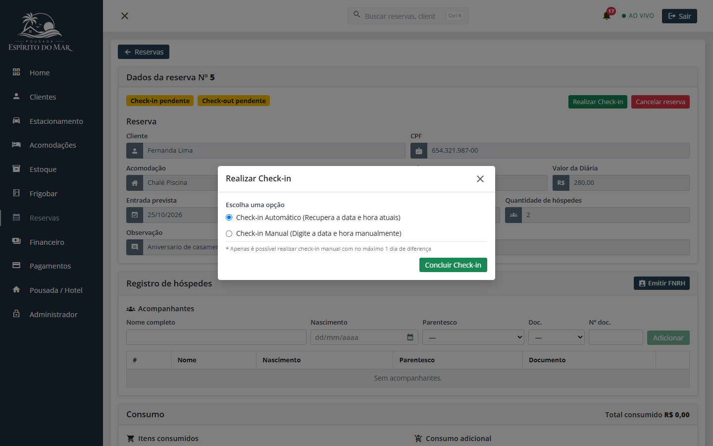
Figura 22 — Opções de check-in: automático ou manual.
Depois do check-in, o botão vira Dados do Check-in — mostra quem
fez e quando.
Registrar acompanhantes
No bloco “Registro de hóspedes”, informe quem está junto do titular:
nome completo, nascimento, parentesco e documento. Clique em
Adicionar. A lista fica salva na reserva e sai na FNRH.
Emitir a FNRH (ficha de registro)
A FNRH é a ficha de registro de hóspedes exigida para meios de hospedagem — é a “ficha de
entrada” que o hóspede assina.
Na ficha da reserva, clique em Emitir FNRH.
Informe o Motivo da viagem e a placa do veículo (se houver).
Clique em Emitir e imprimir. A ficha abre pronta para imprimir e entregar ao hóspede assinar.
Todas as fichas emitidas ficam listadas em “Fichas FNRH emitidas” — com data,
motivo e botão de reimpressão. Elas também ficam arquivadas no cadastro do cliente (seção 6).
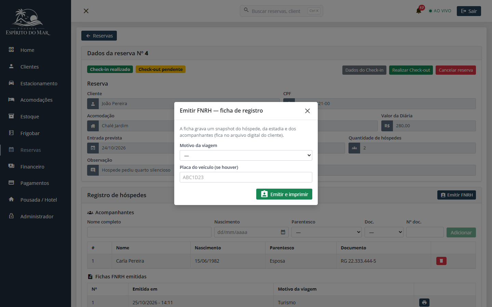
Figura 23 — Emissão da ficha FNRH.
Lançar consumo durante a estadia
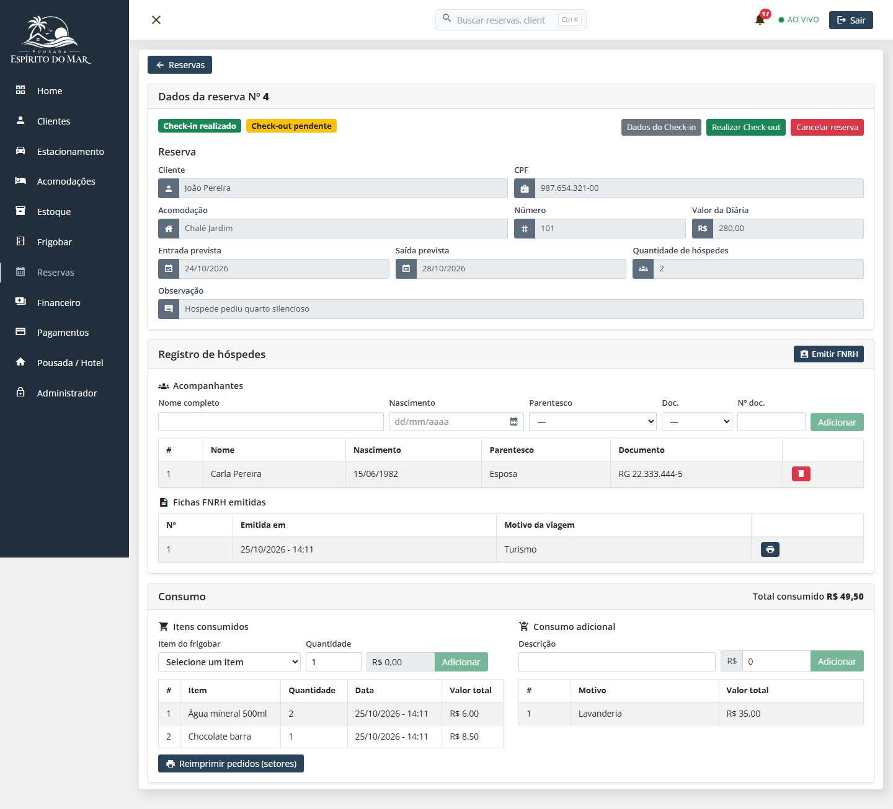
Figura 24 — Ficha de uma reserva em estadia: registro de hóspedes e consumo.
Com a reserva Iniciado, o bloco Consumo aceita
dois tipos de lançamento:
Itens consumidos (frigobar)
Escolha o Item do frigobar (a lista mostra a quantidade disponível), informe a Quantidade e confira o valor.
Clique em Adicionar. O sistema dá baixa no frigobar e soma no consumo.
O botão Reimprimir pedidos (setores) manda a conta dos itens para as
impressoras de setor (ex.: bar/cozinha) de novo — útil quando o pedido se perde ou a impressora falha.
Consumo adicional
Escreva a Descrição (ex.: “Lavanderia”, “Tour de buggy”) e o Valor.
Clique em Adicionar. O valor entra no total consumido.
O campo “Total consumido” no topo do bloco mostra itens + adicionais somados,
em tempo real.
Atenção
Só é possível lançar consumo enquanto a reserva está
Iniciado. Depois do check-out, os valores fecham e não dá mais para
alterar.
Fazer o check-out (hóspede saindo)
Abra a reserva e clique em Realizar Check-out.
O sistema abre o resumo da conta: total de itens consumidos, valor do consumo, total de diárias, valor da estadia e adicionais lançados.
Se precisar cobrar algo extra de última hora, marque “Custos Adicionais” e informe valor + descrição (o botão + cria mais linhas).
Se houver cortesia, preencha o Desconto em R$ — o Valor Final recalcula na hora.
Escolha a Forma de pagamento e clique em Confirmar Pagamento.
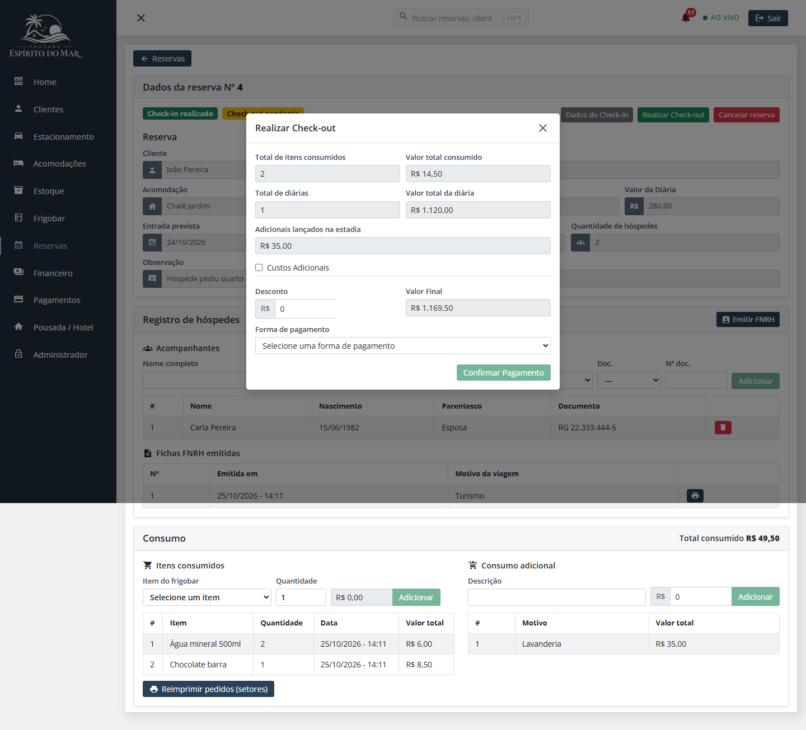
Figura 25 — Fechamento da conta no check-out.
Pronto: a reserva passa a Finalizado, a acomodação fica livre na
Home e o comprovante já é gerado — ele pode ser impresso na hora pela
impressora padrão e fica salvo na tela Pagamentos (seção 12).
Regra do check-out antecipado
Se o hóspede sair antes da data prevista, o sistema cobra somente as diárias
até o dia atual — nada de cobrar noites não dormidas.
Em Dados do Check-out você vê quem fechou a conta, quando, e o
resumo de valores — com botão para baixar o comprovante.
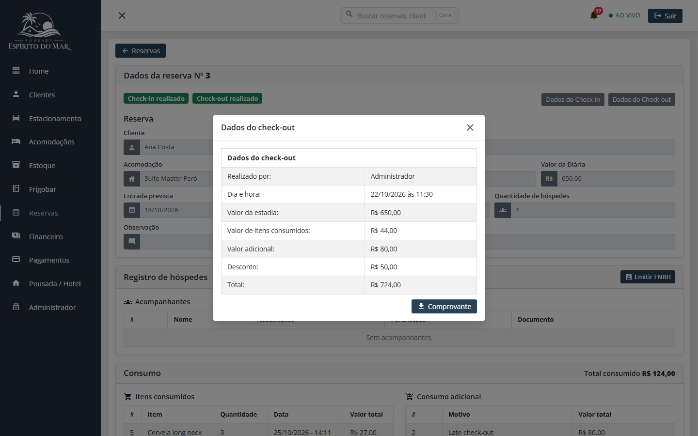
Figura 26 — Resumo do check-out realizado, com botão de comprovante.
Cancelar uma reserva
Abra a reserva e clique em Cancelar reserva.
Confirme em SIM (ou NÃO para desistir).
Se a reserva já estiver em estadia, o sistema pede o login e a senha de um Administrador para confirmar — proteção contra cancelamento indevido de quem já está na casa.
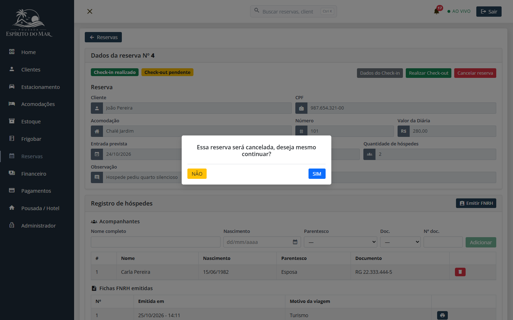
Figura 27 — Cancelamento exige senha de administrador quando o hóspede já está na casa.
12Pagamentos e comprovantes
Tela para conferir e reemitir todos os comprovantes de pagamento gerados nos check-outs —
é o “caixa” do dia.
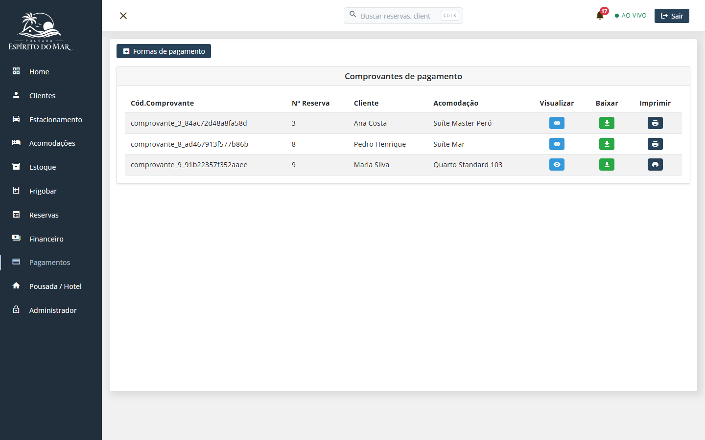
Figura 28 — Comprovantes emitidos.
Visualizar (olho) — abre o comprovante na tela.
Baixar — salva o arquivo do comprovante no computador.
Imprimir — manda direto para a impressora padrão (configurada na seção 14).
Formas de pagamento
Clique em Formas de pagamento para gerenciar o que aparece no
check-out: Dinheiro, Pix, Cartão de Crédito, Cartão de Débito, Transferência. Dá para
cadastrar novas, renomear e ativar/desativar — só as ativas aparecem na hora de cobrar.
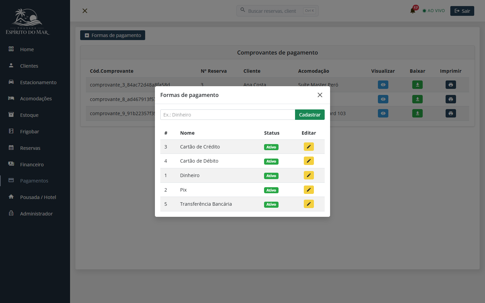
Figura 29 — Cadastro de formas de pagamento.
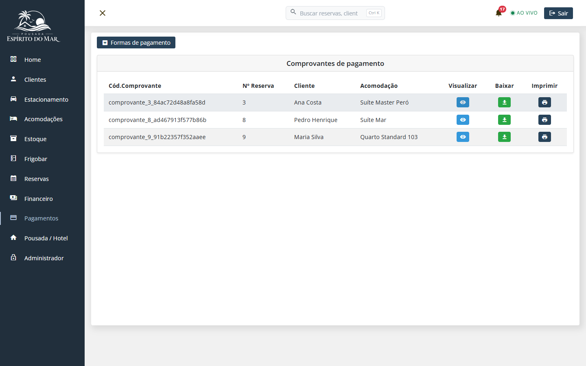
Figura 30 — Visualização de um comprovante.
13Financeiro
O raio-x do dinheiro da pousada — aberto só para Gerente e Administrador.
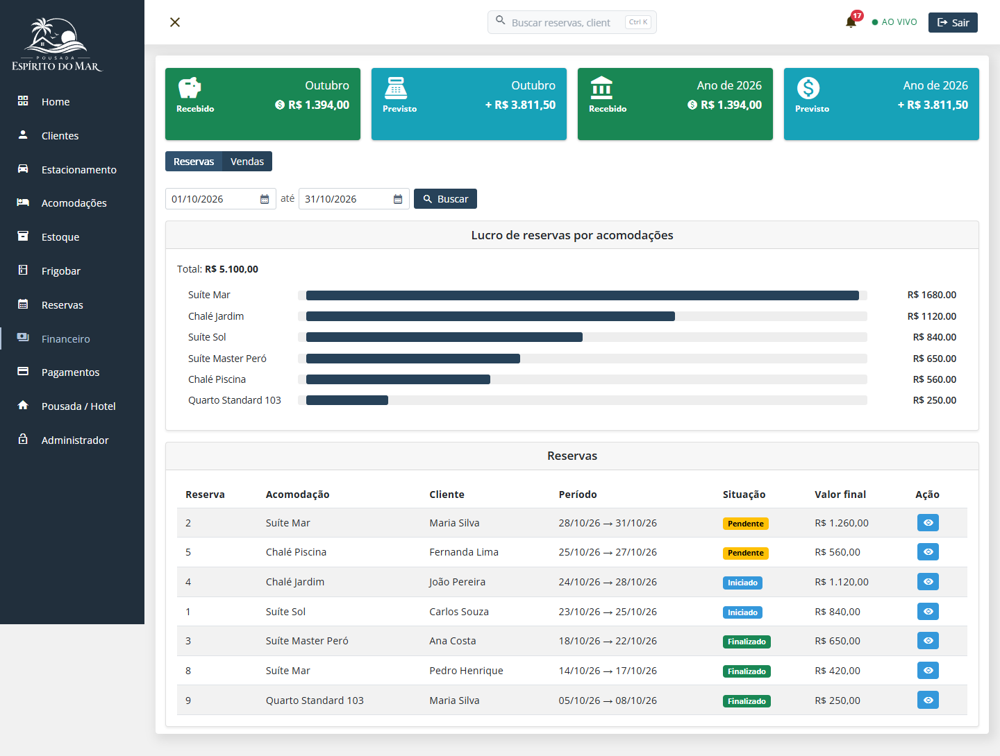
Figura 31 — Financeiro: recebido x previsto e lucro por acomodação.
Cartões do topo
Recebido (mês e ano) — dinheiro que já entrou (check-outs pagos).
Previsto (mês e ano) — o que ainda deve entrar das reservas em aberto e em estadia.
Abas de análise
Reservas — lucro por acomodação (gráfico de barras) e a lista de reservas do período com situação e valor final. Filtre pelo intervalo de datas e clique em Buscar.
Vendas — o que foi vendido como consumo: itens mais vendidos, lucro de vendas, recebido por dia e por forma de pagamento.
Dica
Compare Recebido com Previsto: se o previsto está alto mas o
recebido baixo, há reservas encerrando sem check-out feito — confira a aba “Iniciado” na tela
de Reservas.
14Pousada / Hotel — dados e impressoras
Identidade da hospedagem dentro do sistema (aparece em comprovantes e fichas) e o painel
das impressoras.
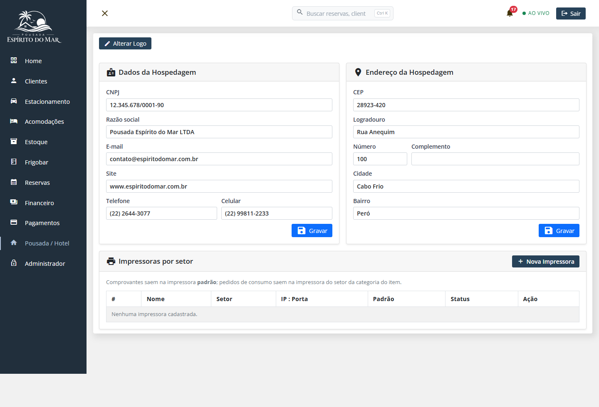
Figura 32 — Dados, endereço e impressoras da pousada.
Dados e endereço da hospedagem
Preencha CNPJ, razão social, e-mail, site, telefones e o endereço completo.
Clique em Gravar em cada bloco. Esses dados saem impressos na FNRH e
nos comprovantes.
Logo
Clique em Alterar Logo e envie a imagem da marca
(PNG, JPG, WEBP ou SVG, até 2 MB). A logo aparece na barra lateral e na tela de login.
Impressoras por setor
A pousada pode ter várias impressoras — uma na recepção, uma no bar, uma na cozinha. O
sistema decide sozinho onde imprimir cada coisa:
Comprovantes saem sempre na impressora marcada como Padrão.
Pedidos de consumo saem na impressora do setor da categoria do item
(configurada na janela Categorias do Estoque, seção 9) — pedido de bebida vai direto pro bar, sem ninguém precisar levar papel.
Clique em Nova Impressora.
Informe Nome, Setor, IP : Porta da impressora na rede e marque se ela é a padrão de comprovantes.
Use o botão de impressora na linha para mandar uma página de teste e conferir se está tudo certo.
15Administrador — funcionários e histórico
Tela de quem gerencia a equipe no sistema (nível Administrador).
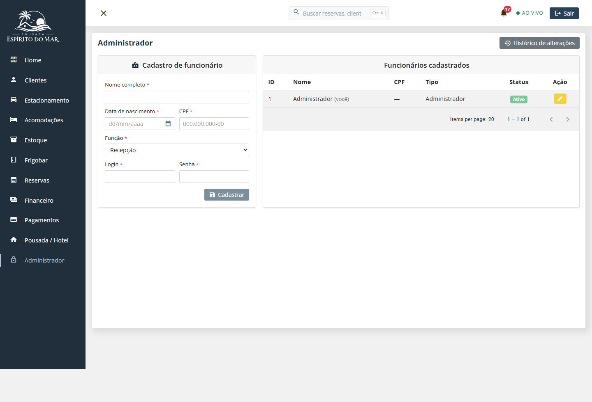
Figura 33 — Cadastro e lista de funcionários.
Cadastrar funcionário
Preencha Nome completo, Data de nascimento, CPF.
Escolha a Função: Recepção, Gerente ou Administrador — define o nível de acesso (seção 2).
Crie o Login e a Senha que a pessoa vai usar para entrar.
Salve. O funcionário aparece na lista ao lado e já pode entrar.
Editar (lápis) — corrige dados e redefine senha.
Ativo/Inativo — desligue o acesso de quem saiu da equipe sem apagar o histórico. Você não consegue desativar o próprio usuário logado.
Histórico de alterações (auditoria)
Clique em Histórico de alterações no topo para abrir a auditoria:
quem fez o quê e quando, em qualquer tabela do sistema (criou, alterou, ativou, desativou).
Filtre por tabela, ação e período e clique em
Buscar.
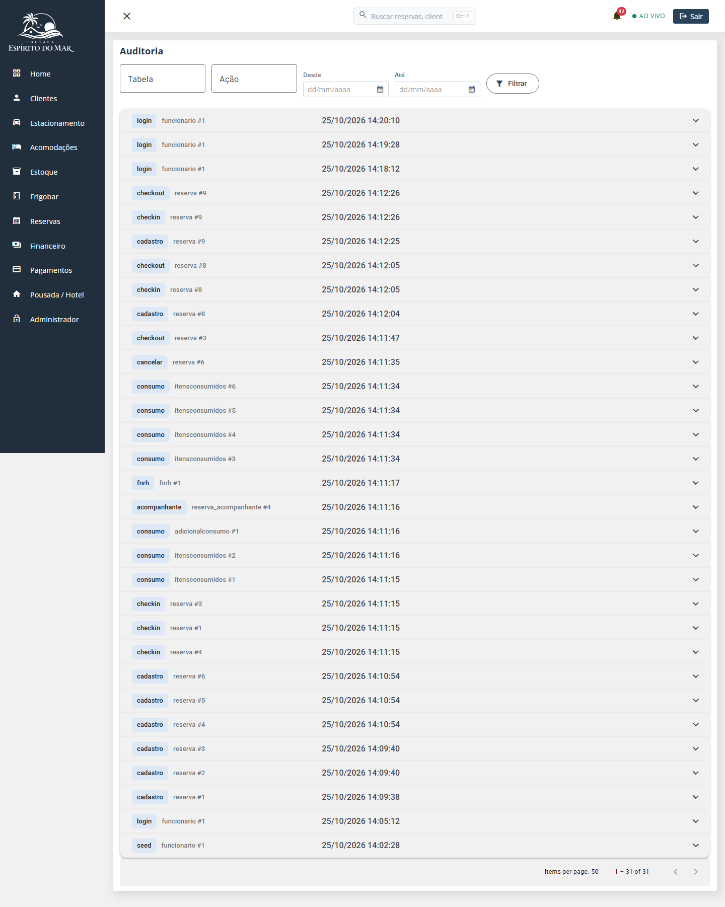
Figura 34 — Auditoria: rastreio completo das ações da equipe.
16Notificações e tempo real
O sistema trabalha ao vivo: quando a bolinha verde “AO VIVO” está acesa,
tudo que acontece em qualquer computador aparece na sua tela na hora.
Avisos instantâneos — um cartão surge no canto informando “Nova reserva”, “Check-in realizado”, “Reserva cancelada” etc.
Sino — guarda o histórico dos avisos. O número vermelho mostra não lidas; clique para abrir o painel.
Clicar na notificação leva direto à reserva relacionada. “Marcar todas como lidas” zera o contador.
Administradores podem apagar itens do histórico de notificações.
Se ficar “offline”, o sistema tenta se reconectar sozinho — os dados continuam salvos.
17O site da pousada
Além do painel interno, existe o site público — a vitrine da pousada para os
hóspedes: apresentação, acomodações, estrutura, galeria de fotos, experiências, localização e
contato.
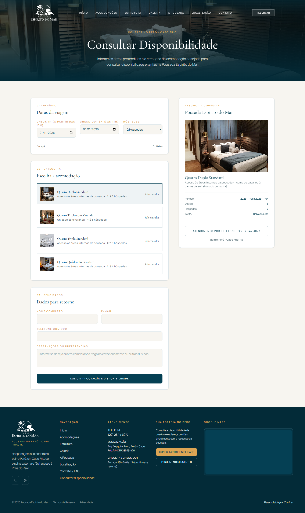
Figura 35 — Página “Reservar” do site: o hóspede pede cotação em 3 passos.
Como o hóspede usa
Período — escolhe datas de check-in e check-out e o número de hóspedes.
Categoria — escolhe a acomodação desejada.
Seus dados — informa nome, e-mail, telefone e preferências.
Clica em “Solicitar cotação e disponibilidade”.
O pedido chega à recepção (por telefone/WhatsApp/e-mail de contato). Aí a recepção confirma
a disponibilidade e registra a reserva no painel (seção 11) — o site faz a
captação, o painel faz a gestão.
Dica
Vale divulgar o link do site nas confirmações e redes sociais — quanto mais pedidos chegarem
pelo site, menos tempo no telefone.
18Perguntas frequentes do dia a dia
“Chegou um hóspede sem reserva (walk-in). O que faço?”
Cadastre o cliente (seção 6) e faça a reserva normalmente com entrada hoje. Se ele já vai
ficar, faça o check-in logo em seguida — pode ser na mesma hora.
“O cliente já ficou hospedado antes. Cadastro de novo?”
Não. Busque pelo nome ou CPF e reaproveite o cadastro — inclusive documentos e dados FNRH já
ficam salvos para as próximas fichas.
“Erramos o lançamento de consumo. Tem como desfazer?”
Antes do check-out, peça ao gerente/administrador para corrigir. Depois do check-out a conta
está fechada — qualquer ajuste deve ser resolvido com a administração e fica registrado na
auditoria.
“A tela não mostra a reserva que meu colega acabou de criar.”
Verifique a bolinha “AO VIVO” no topo. Verde = tudo certo (a reserva aparece sozinha).
Cinza/offline = sem conexão com o servidor — chame o suporte.
“Preciso saber quem alterou um cadastro.”
Tela Administrador → Histórico de alterações (seção 15): filtre pela tabela
e pelo período.
“Ativo/Inativo apaga o registro?”
Não. Desativar só tira o item do uso (não aparece para novas operações). O histórico fica
inteiro guardado — e dá para reativar a qualquer momento clicando no selo de novo.
“Posso usar no celular?”
Sim, o sistema abre no navegador do celular e o menu lateral vira um botão hambúrguer.
Para operações longas (fechamento, relatórios) o computador é mais confortável.
19Suporte
Em caso de dúvida, erro ou sugestão de melhoria, fale com o suporte do sistema:
Canal
Contato
E-mail
contato@clarituz.com.br
Telefone / WhatsApp
(19) 99555-1577
Ao relatar um problema, informe: o que você estava fazendo, em qual tela, e
se possível uma foto da mensagem de erro. Isso acelera muito a solução.
Manual do Sistema INNJOY · Versão 2.0 · outubro/2026 · Desenvolvido por Clarituz